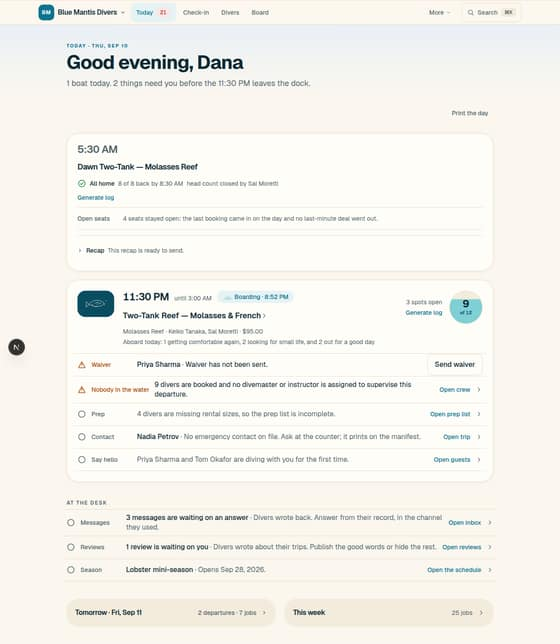
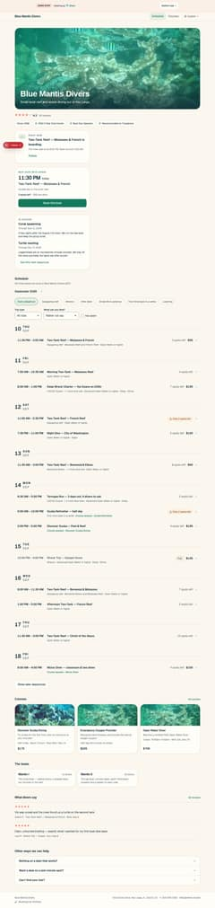
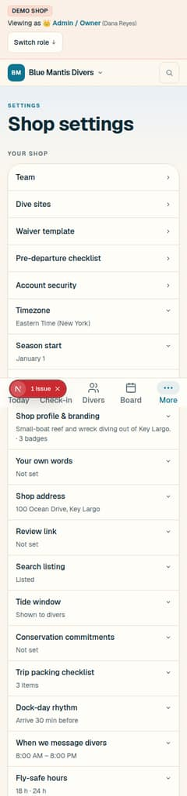

The owner's brief: the design system is ugly and has far too many controls and external-facing features; rethink the visual presentation; give at least five concepts that consolidate concepts and make it clean and simple. This canvas answers with a count of what is there, a floor every concept shares, and six concepts that each consolidate along a different axis — by noun, by time, by place, by question, by default, by face — every one redrawing the shop home for the same shop on the same morning so they compare like for like. Nothing here is normative until the owner picks and the ADR moves to Accepted.
DiveDay is not short of a design system. It is long on product. Thirteen design canvases landed in fifteen days, and the last one ran four rounds in three days: round 2 added five levers, round 3 eight more and a redraw of every surface, round 4 seven possibilities — all seven of which shipped on 09-10 as a stack of seven pull requests. The floor that would have made any of it cohere — One hand's five deletion slices, 20a to 20e — is still open. Every feature arrived three times: as a switch in Settings, as a door on a surface, and as a page outside. So the home carries about twenty tappable controls before a staffer has done anything, three grammars sit on one screen (a 28px panel, a bare ledger, two tiles), and a decoration layer — the water band, the drawn tile, the dial, the stage chip — sits on top of all of it. The storefront's one page has fourteen sections and twenty-five controls. Settings is forty-three rows and twelve more pages. None of that is a bad component; it is addition with no subtraction, and the fix is not a fourteenth vocabulary but fewer things — fewer nouns, fewer doors, fewer switches, and fewer pages outside.

The home at 1280. Count the doors: Print the day, Generate log twice, Send waiver, Open crew, Open prep list, Open trip, Open guests, Open inbox, Open reviews, Open the schedule, two horizon tiles, four tabs, More, search — and under them a band, a drawn tile, a chip, a dial and a disclosure. Three row grammars on one screen.

The storefront, the whole page. Hero, rating and three badges, Right now, Next boat with space, In season, the lens rail (seven chips), two selects and a checkbox, nine days of ledger, Show later, three courses, the boats, two reviews, three disclosures, the footer. Fourteen sections for a diver who came to book a boat.

Settings at 390, the first 1,650 of 2,567 pixels. Forty-three rows in three groups, twelve of them doors to a page of their own. Every row is a conditional somewhere else in the app.
Whatever the owner picks, these happen first — and unlike One hand's twelve, which hold each job at one spelling and are still the floor's floor, these are deletions of kinds of thing, not of spellings. Three of them need the owner's word and are marked with their call.
| Kind of thing | Today | The floor | Held by |
|---|---|---|---|
| The door | a row ends in "Open …" and a chevron; 9 on the home alone | a row's own tap is its only door; the trailing verb, where one exists, is the fix and nothing else | a guard on a link inside a row |
| The chip and the pill | 13 translucent pills, a stage chip, a grey capsule for a neutral fact | a state is a word: Blocked in danger ink, or a sentence in muted ink; nothing tinted behind text on a staff surface | Badge is deleted, not narrowed (20c, taken to zero) |
| The decoration · call b | the water band, the drawn site tile, the dial's water, coral washes, the greeting's mark | off every /shop/** page; the shop's colour is the staff app's one accent; the hand and the coral stay on the diver's side, where a shop shows them to a friend | the coral table gains a row; WaterBandStyle stops rendering under /shop |
| The switch · call c | ~30 settings that turn a feature on or off; each one a conditional on a surface | a feature is on with a default, changeable in a sentence, or it does not exist — concept 5 in full, or its first half under any other pick | the settings registry shrinks to facts; each retired switch's conditional goes with it |
| The outside · call c | 14 sections on the storefront's front page; embeds in 8 kinds; 6 print sheets; 4 integrations; a lobby display | the front page is the week and Right now; every other public noun is one tap in or gone; one embed, one look; every page prints; three connects | the storefront's composition test; the embed catalogue's snippet table shrinks to one |
| DiveDay's own pages · call d | 17: home, product, pricing, about, three switching pages, two regions, demo stories, status, onboard, the doors | three, plus the two legal ones: the homepage (which already is the demo), pricing, switching; product, about, regions and status fold into the homepage or leave | the marketing route table; check:route-coverage |
Each board redraws the shop home for Blue Mantis Divers on Thursday, August 27, 2026, at 6:40 AM — the same day every canvas since Clearwater has used — at desktop and at 390, and says what it folds, what it deletes, what it keeps, where it stops, what it needs and what its one wow is. They are deliberately far apart: not six shades of one look, but six answers to "what is the one thing the app is organised by?" A concept's name is stable from here on; none of them reuses a letter from One hand's A to Z. Three words and Ask draw nearly the same rows on purpose — the day's facts are the day's facts; what differs is how you reach anything else: three words, or one field.
The staff app is Day, People, Shop. Twenty-one destinations, More, the dock and ⌘K fold into three words; every page beneath is one list in one grammar.
For: learned in a sentence; Direction A taken from the row up to the map. Against: Shop is a drawer of nine; it looks like a list that lines up. Cost: 3–4 sessions.
One list in the product: the calendar. Everything with a date is a mark on the week; nothing with a date has an index page. People and things are a drawer.
For: the plan and the memory are one page; requests, waivers and orders land where they belong. Against: seven columns hate a phone; the month has no home. Cost: 5–6.
Two tools: a dense desktop ledger for the desk and the owner, and a phone with one boat on it for the crew. Nothing is drawn for both.
For: half the controls each, by construction; the boat finally gets a tool drawn for glare. Against: two things to learn; the owner who also drives. Cost: 6–8.
One control: a field that takes a name, a day, a boat or a word and answers with the fact and its fix. No navigation; the home is the answer to "today".
For: the 09-06 palette already does this; nothing to find. Against: typing on a dock; discoverability; can read as a launcher. Cost: 3–4.
No settings. One card of what the shop is and twelve sentences DiveDay decided for it. Every switch becomes a default; every control that existed because a switch could be off goes with it.
For: the direct answer to "too many external-facing features"; composes with all five others. Against: DiveDay decides more; the exception is a person. Cost: 4–5.
The storefront is the app. Staff sign in and the same page grows a strip and a layer of ink. The staff app as a separate product is deleted; the boat and the till stay apart.
For: "our website is our office"; one component set, the shop's. Against: needs 3's boat; the hero is in the desk's way; privacy is structural. Cost: 8–10.
| 1 · Three words | 2 · The week | 3 · Ashore and aboard | 4 · Ask | 5 · The shop's card | 6 · One face | |
|---|---|---|---|---|---|---|
| Organised by | the noun | the date | the place you stand | the question | the default | the shop's own page |
| Destinations | 3 | 2 | 5 + 1 | 0, answers | unchanged − 1 | 1 + 2 |
| On a phone | three words at the bottom | one day, swiped | the boat, and only the boat | the field under the thumb | the card | the page with a strip |
| A row | who · what · a word | a block on an hour | a ledger line · a 64px name | a fact · a verb | a fact, or a decided sentence | the public row · a grey line of ink |
| Settings | under Shop | in the drawer | Ashore › Shop | a question | the card | the till |
| The storefront | unchanged | unchanged | unchanged | unchanged | fewer things on it | is the app |
| Controls on the home at rest | 4 + rows | 5 + blocks | 6 · 1 | 1 + answers | −3 | 4 + rows |
| Kit | 7 | 6 | 6 + 3 | 4 | 22 | the storefront's + 2 |
| Composes with | 4 (search), 5 (Shop) | 4, 5 (the drawer) | 1, 2 or 4 ashore; 6 needs it | any, as the field | all five | 3 (required), 5 |
| Cost | 3–4 | 5–6 | 6–8 | 3–4 | 4–5 | 8–10 |
| Its wow | three words | last Saturday is still there | one boat on the captain's phone | three letters | nothing to configure | the website is the office |
Five is not a concept in competition with the others; it is the one deletion that every other board assumes in its Settings row, and the one that answers the half of the brief about external-facing features directly. Three's boat half is the right phone under any of them and is required by six. Four is any concept's search. The real choice of shape is between one and two — a shop that thinks in nouns against a shop that thinks in weeks — and six is the boldest, the most expensive, and the one a shop would repeat to a friend.
The name and the mark. Harbor — the diver-facing pages wear the shop's brand, and six makes that everything rather than less. The dock test: 44px targets, 16px critical text, AA, never colour alone. The coral bans on manifests, roll call, certs, waivers and payments. The claims policy. The roll call commits before it renders. H-02's retention and erasure promises. Boat mode as the palette of whatever screen is on the boat. And One hand's twelve deletions, which every concept here stands on and none restates.
This cover, then the six boards in two rows of three — by noun, by time, by place on the first; by question, by default, by face on the second. Each board opens with its case, its tradeoff and its cost; then the counts, today against the concept; then the home at desktop; then the same at 390 beside what it folds, what leaves and what it keeps; and closes with where it stops, what it needs and its one wow. Every name, number and time is demo-seed fiction — Blue Mantis Divers, Key Largo, Dana at the desk, Keiko and Sal aboard Mantis II, the 7:00 Two-Tank Reef, the 1:00 Wreck Trip, the 7:30 Night Dive — as the earlier canvases recorded it. Nothing here is real customer data.